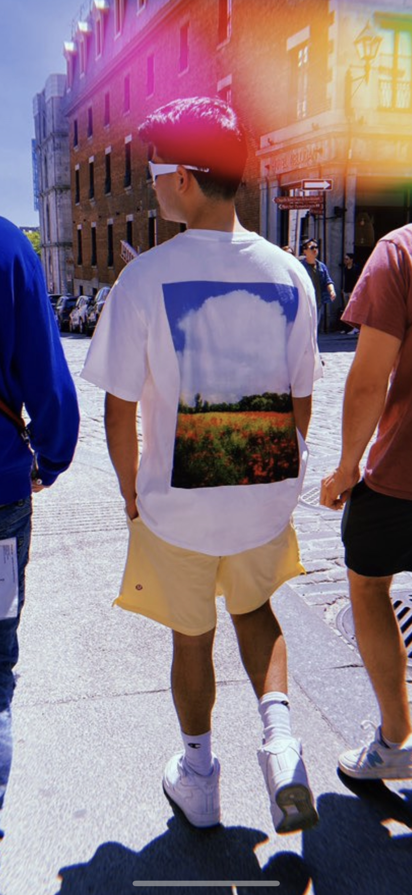

About Me
Hey there, I'm Nicolas Rodriguez, a 24-year-old from Colombia with a passion for cinematography and website and app design. Ever since I was very little, I've been captivated by the art of storytelling through moving images. With my camera in hand, I strive to create visually stunning and emotionally impactful pieces that leave a lasting impression.
My creative journey doesn't stop there. I'm also deeply passionate about web design and development, languages such as HTML and CSS really interest me. I find joy in crafting seamless digital experiences that not only look visually appealing but also provide smooth functionality. Whether it's designing eye-catching websites or developing user-friendly apps, I'm constantly honing my skills and seeking new ways to push the boundaries of what's possible in the digital world.
My Hobbies
- Videography & photography
- Playing the guitar
- Video Games
- Movies
- Music
- Digital Design
A quote from a movie I really enjoy:
"There are the hands that make us, And there are the hands that guide us."
-Guardians Of The Galaxy III (2023)